about BPS 200
자기부상 기술을 기반으로 기계적 마찰을 최소화하고, 고순도 유체를 정밀하게 이송합니다. 베어링과 씰이 없는 구조로 오염 및 유지보수 부담을 줄이며, 다양한 공정 조건에 안정적으로 대응합니다.
- 최대 유량
- 21 L/min
- 최대 압력
- 2.6 bar
5.5 GPM • 37.7 PSI
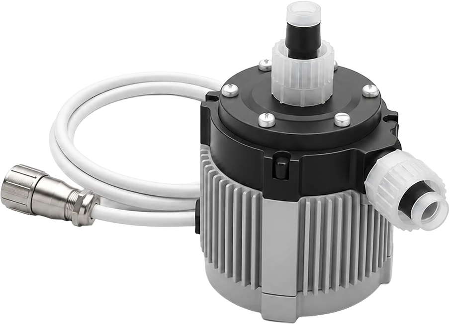

유체의 흐름에는 각기 다른 조건과 요구가 존재합니다. RTCK는 다양한 펌프 기술과 제품에 대한 이해를 바탕으로 공정에 적합한 솔루션을 연결합니다. 성능, 호환성, 운전 조건에 대한 기술적 검토부터 제품 공급까지, 안정적인 공정 운영을 위한 최적의 선택을 지원합니다.
PUMP
Technology
Levitronix® · BPS Series
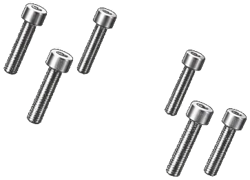
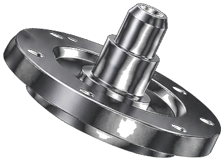
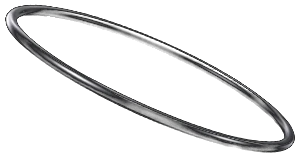
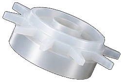
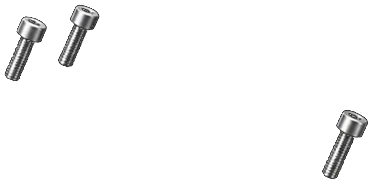
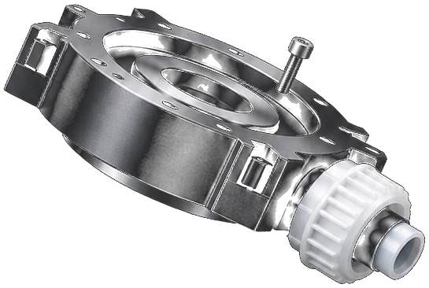
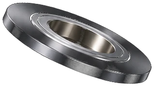
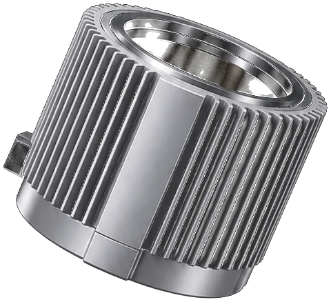
Features
기계적 접촉이 없어 마모 입자가 생기지 않습니다. 접액부는 고순도 불소수지로만 구성됩니다.
밸브·데드존이 없는 개방형 헤드. 필터 수명과 민감 유체의 안정성에 직접 기여합니다.
전자식 임펠러 제어로 유량·압력을 높은 턴다운 비율로 조절. 유량·압력 컨트롤러와 피드백 연동.
마모 부품이 없는 구조. 공압 펌프 대비 작은 설치 공간, 낮은 소음·진동, 예방 정비 데이터 지원.
최대 유량 / 최대 압력 기준
자기부상 기술을 기반으로 기계적 마찰을 최소화하고, 고순도 유체를 정밀하게 이송합니다. 베어링과 씰이 없는 구조로 오염 및 유지보수 부담을 줄이며, 다양한 공정 조건에 안정적으로 대응합니다.
5.5 GPM • 37.7 PSI

높은 유량과 압력 성능을 바탕으로 대용량 유체 이송에 대응합니다. 자기부상 구동과 고순도 불소수지 소재를 적용해 공정 안정성을 확보하고, 정밀한 유량 제어를 지원합니다.
20 GPM • 46 PSI
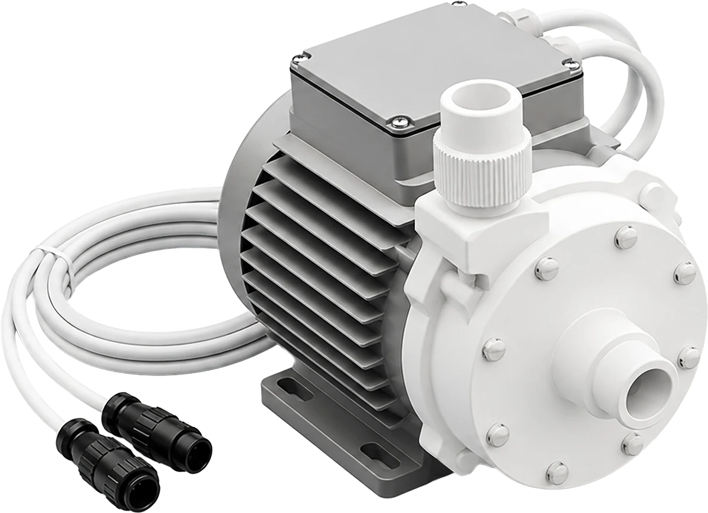
자기부상 구동 기술을 기반으로 고유량 및 고압 환경에 대응하는 고청정 펌프 시스템입니다. 베어링과 기계적 씰이 없는 구조로 마모와 입자 발생을 최소화하며, 고순도 불소수지 소재와 정밀한 전자식 제어를 통해 까다로운 반도체 Wet 공정에서도 안정적인 유체 이송을 지원합니다.
21 GPM • 100 PSI
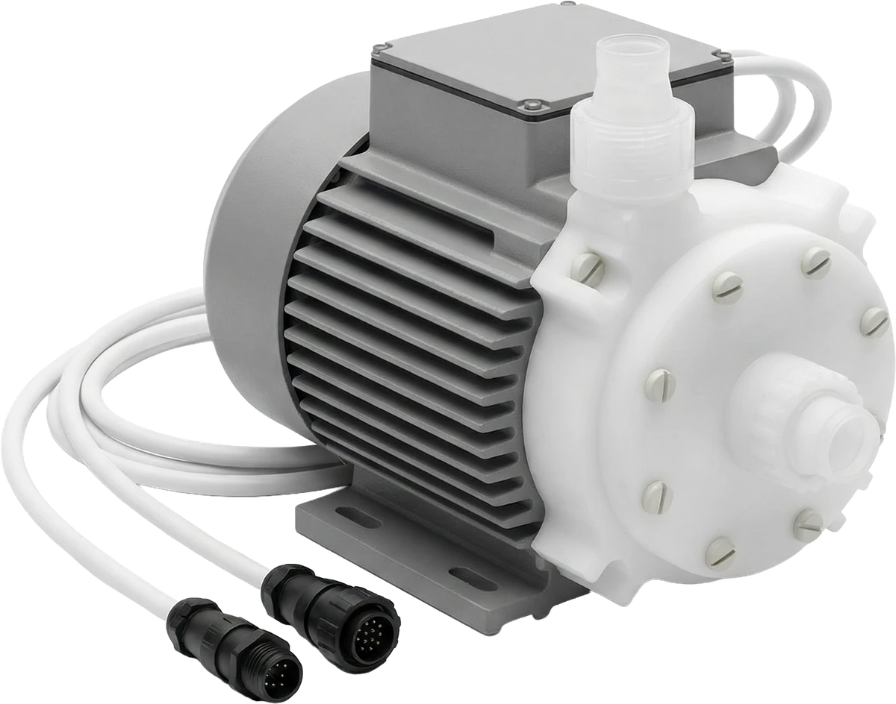
End User / Equipment Supplier

㈜알티씨케이 RTCK Co., Ltd.대표이사 오치언서울특별시 성동구 왕십리로 10길 6 서울숲비즈포레 10층
rtck.co.kr